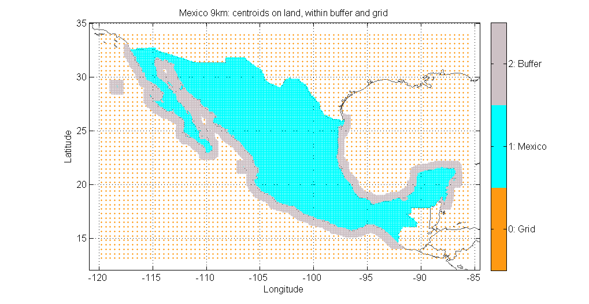
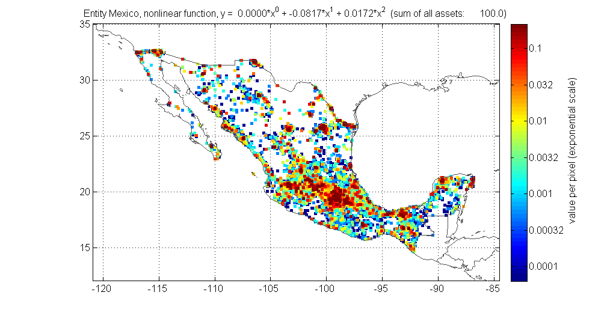

Contents
function [centroids, entity_base] = climada_create_centroids_entity_base(country_name, asset_resolution_km, hollowout,... check_for_groups, night_light, pp, borders, border_mask, ... check_figure, save_on_entity_centroids)
create a portfolio for a specific country, consisting of - centroids (mat-file) - entity_base (assets add up to 100 for an entire country, mat and xls-file) NAME: climada_create_centroids_entity_base PURPOSE: create centroids and entity for a specific country, distribute assets and value according to night light intensities CALLING SEQUENCE: [centroids entity_base] = climada_create_centroids_entity_base EXAMPLE: [centroids entity_base] = climada_create_centroids_entity_base; [centroids entity_base] = climada_create_centroids_entity_base('Bangladesh', 10); INPUTS: country_name : a read assets structure, see climada_entity_read asset_resolution_km: resolution for centroids and assets within entity, default 10km check_for_groups: if country is within a group (e.g. China with Taiwan), to combine the two or more regions, default do not check hollowout : hollwout country, so to take only points close to the coast line, default do not hollowout night_light : structure with night light intensities, automatically load from mat or read from default file pp : nonlinear transformation function of night lights to values (e.g. pp = [0 1 0]; y = 0*x^2 + 1*x + 0 borders : border structure (with name, polygon for every country) border_mask : structure with all country masks (zeros and ones) check_figure : set to 1 to visualize figures, default 1 save_on_entity_centroids: to save entity and centroids automatically, default 1 OUTPUTS: centroids : a structure with fields centroid_ID, Latitude, Longitude, onLand, country_name, comment for each centroid entity_base : a entity structure with fields assets, damagefunctions, measures, discount. Asset values from an entire country sum up to 100. If only coastal areas are selected, values sum up to less than 100. MODIFICATION HISTORY: Lea Mueller, muellele@gmail.com, 20140205
%- close all global climada_global if ~climada_init_vars, return; end % poor man's version to check arguments if ~exist('country_name' , 'var'), country_name = ''; end if ~exist('asset_resolution_km' , 'var'), asset_resolution_km = []; end if ~exist('check_for_groups' , 'var'), check_for_groups = []; end if ~exist('hollowout' , 'var'), hollowout = 0 ; end if ~exist('night_light' , 'var'), night_light = []; end if ~exist('pp' , 'var'), pp = []; end if ~exist('borders' , 'var'), borders = []; end if ~exist('border_mask' , 'var'), border_mask = []; end if ~exist('check_figure' , 'var'), check_figure = 1 ; end if ~exist('save_on_entity_centroids', 'var'), save_on_entity_centroids = 1 ; end centroids = []; entity_base = []; % set modul data directory modul_data_dir = [fileparts(fileparts(mfilename('fullpath'))) filesep 'data']; % set default parameters if isempty(asset_resolution_km), asset_resolution_km = 10 ; end check_printplot = 0; % parameter of second order polynomial function to transform night lights % nonlinearly into distribution of asset values if isempty(pp), pp = [] ; end
0a) load world borders
climada_plot_world_borders
fprintf('0) \t a) Load world borders including regions\n') if isempty(borders) if isfield(climada_global,'map_border_file') map_border_file = strrep(climada_global.map_border_file,'.gen','.mat'); else fprintf('no map found\n') return end try load(map_border_file) catch err fprintf('0) create and save world borders as mat-file...') climada_plot_world_borders close fprintf('done\n') load(map_border_file) end end if ~isfield(borders,'region') || ~isfield(borders,'ISO3') || ~isfield(borders,'groupID') fprintf('No region, ISO3, or groupID information within border file available. Unable to proceed.\n') fprintf('You might \n\t - delete the borders-file/world_50.mat and \n') fprintf('\t - check for the file "countryname_ISO3_groupID_region.txt" \n\t - and retry.\n') return %borders = climada_borders_region(borders,[],0); end
0) a) Load world borders including regions
0b) load country masks
load border_mask for all countries (original resolution ~10km)
fprintf('0)\t b) Load border masks...') if isempty(border_mask) try load([modul_data_dir filesep 'border_mask_10km']) catch err try load([modul_data_dir filesep 'border_mask_' int2str(asset_resolution_km) 'km']) catch err cprintf('r','\n\tborder_mask not available\n') cprintf('r','\tCreate border mask with function\n') cprintf('r','\tborder_mask = climada_polygon2raster(borders, raster_size, save_on)\n') qstring = 'border_mask not available, do you want to create it now? This may take 5-20 min, depending on the resolution (~50km, ~10km)'; choice = questdlg(qstring,'Create border mask now?'); if strcmp(choice,'Yes') input_resolution_km = climada_geo_distance(0,0,night_light.resolution_x,0)/1000; input_resolution_km = ceil(input_resolution_km/10)*10; factor = round(asset_resolution_km/input_resolution_km); raster_size = round(size(night_light.values)/factor); border_mask = climada_polygon2raster(borders, raster_size, save_on); else return end end end end fprintf(' done\n')
0) b) Load border masks... done
0c) ask for country or region
country_name_str = []; if isempty(country_name) [liststr sort_index] = sort(borders.name); [s,v] = listdlg('PromptString','Select exactly one country:',... 'ListString',liststr,'SelectionMode','single'); pause(0.1) if ~isempty(s) country_name = borders.name(sort_index(s)); else fprintf('No country chosen\n') return end else %check that country_name is a cell if ~iscell(country_name) country_name = {country_name}; end end % check if country is within a group (e.g. China with Taiwan) and expand % country_name with other countries within group country_name_ori = country_name; if check_for_groups for c_i = 1:length(country_name) c_index = strcmp(country_name{c_i},borders.name); if borders.groupID(c_index)>0 %~isnan(borders.groupID(c_index)) ; group_index = borders.groupID == borders.groupID(c_index); country_name = unique([country_name borders.name(group_index)]); end end end if isempty(country_name_str) country_name_str = sprintf('%s, ',country_name{:}); country_name_str(end-1:end) = []; end if length(country_name_ori) ~= length(country_name) [C, ia] = unique([country_name country_name_ori]); added_countries = ~ismember(country_name,country_name_ori); added_countries = sprintf('%s, ',country_name{added_countries}); added_countries(end-1:end) = []; fprintf('\t\t Added the following countries: %s\n',added_countries) end country_name_str = strrep(country_name_str,'.',''); if hollowout hollow_name = 'hollow'; else hollow_name = ''; end % if year>2010; year_to_distribute = 2010; else year_to_distribute = year; end % cprintf( [46 139 87 ]/255, '\t --> *** %s %d (%d) and %d on ~%dkm %s ***\n', ... % country_name_str, year, year_to_distribute, year_forecast, asset_resolution_km, hollow_name); cprintf( [46 139 87 ]/255, '\t *** %s on roughly %d km %s ***\n', ... country_name_str, asset_resolution_km, hollow_name);
*** Mexico on roughly 10 km ***
1) Cut out night lights for the specific country and transform nonlinearly
silent_mode = 0; save_on = 0; % pp is the parameter of second order polynomial function to transform night lights % nonlinearly into distribution of asset values [values_distributed pp] = climada_night_light_to_country(country_name{1}, pp, night_light,... borders, border_mask, 0, check_printplot, save_on, silent_mode); if isempty(values_distributed); centroids = []; entity = []; return; end if ~any(values_distributed.values) centroids = []; entity = []; cprintf('r','\t\t No light data available for %s). Unable to proceed.\n', country_name_str) return end % parameters from nonlinear transformation pp_str = 'y = '; for i = length(pp):-1:1 if pp(i)~=0 if ~strcmp(pp_str,'y = ') pp_str = [pp_str ' +']; end pp_str = sprintf('%s %0.4f*x^%d',pp_str,pp(i), length(pp)-(i)); end end if ~isempty(pp) pp_str_ = strrep(strrep(strrep(strrep(strrep(strrep(pp_str,' ',''),'^',''),'0.',''),'+','_'),'*',''),'.',''); pp_str_(1:2) = []; else %pp_str_ = 'unknown'; pp_str_ = ''; end
Transform night lights to values (nonlinearly or linearly) y = 0.0000*x^0 + -0.0817*x^1 + 0.0172*x^2 Distribute values according to night lights within Mexico on a 10 km resolution
1b) Downscale resolution
asset_resolution_km_ori = asset_resolution_km; fprintf('1) Downscale distributed values to ~%dkm ... ', asset_resolution_km) [values_distributed, X, Y asset_resolution_km] = climada_resolution_downscale(values_distributed, asset_resolution_km, 'sum'); values_distributed.values(values_distributed.values<0) = 0; if asset_resolution_km_ori ~= asset_resolution_km fprintf('(exactly ~%dkm)', asset_resolution_km) end fprintf(' done\n')
1) Downscale distributed values to ~10km ... Requested resolution (9 km) corresonds already to input matrix (9.26 km) (exactly ~9km) done
2) Create centroids
country_index = ismember(border_mask.name,country_name);
fprintf('2) Create centroids for %s on a ~%d km resolution\n', country_name_str, asset_resolution_km) % Create mask and buffer mask for selected region based on distributed values % buffer_km = 150; buffer_km = 50; fprintf('\t a) Create buffer of ~%dkm\n',buffer_km) no_pixel_buffer = ceil(buffer_km/asset_resolution_km); printname = sprintf('%s_%dkm',country_name_str, asset_resolution_km); printname_pp = [printname ', ' pp_str_]; if hollowout printname = [printname '_' hollow_name]; hollowout_km = 500; no_pixel_hollow = ceil(hollowout_km/asset_resolution_km); fprintf('\t b) Select only coastal areas, hollowout matrix of ~%dkm\n',hollowout_km) else fprintf('\t b) Select entire country (hollowout is set to 0) \n') no_pixel_hollow = 0; end % for big countries this can take some time if asset_resolution_km_ori >= asset_resolution_km-4 & asset_resolution_km_ori <= asset_resolution_km+4; c_idx = strcmp(border_mask.name, country_name{1}); matrix_hollowout = climada_mask_buffer_hollow(logical(border_mask.mask{c_idx}), no_pixel_buffer, no_pixel_hollow, border_mask, ... 0, 0, printname, country_name); else matrix_hollowout = climada_mask_buffer_hollow(logical(values_distributed.values), no_pixel_buffer, no_pixel_hollow, border_mask, ... 0, 0, printname, country_name); % otherwise skip buffer and hollowout %matrix_hollowout = logical(values_distributed.values); end % c_borders_index = strcmp(country_name{1}, borders.name); % matrix_structure = values_distributed; % matrix_structure.values = border_mask.mask{c_borders_index}; % matrix_structure = climada_resolution_downscale(matrix_structure, asset_resolution_km, 'sum'); % matrix_hollowout = logical(matrix_hollowout + matrix_structure.values); if ~any(find(matrix_hollowout)) fprintf('\t\t No pixels within %s after hollowout (not at coast)\n',country_name_str) centroids = []; entity = []; entity_forecast = []; return end % create centroids from matrix and save if needed centroids = climada_matrix2centroid(matrix_hollowout, border_mask.lon_range, border_mask.lat_range, ... country_name); centroids.comment = sprintf('%s, %s %s',country_name_str, values_distributed.comment, hollow_name); % visualize centroids on map if check_figure climada_plot_centroids(centroids, country_name, check_printplot, printname); end if save_on_entity_centroids centroids_filename = [climada_global.system_dir filesep 'centroids_' strrep(country_name_str,', ','') '_' int2str(asset_resolution_km) 'km_' hollow_name]; save(centroids_filename,'centroids') fprintf('\t d) Save centroids in \n') cprintf([113 198 113]/255,'\t\t %s\n',centroids_filename) end
2) Create centroids for Mexico on a ~9 km resolution a) Create buffer of ~50km b) Select entire country (hollowout is set to 0) Requested resolution (9 km) corresonds already to input matrix (9.26 km) --> 36681 centroids (8692 on land and within buffer, 2891 outside) d) Save centroids in \\CHRB1065.CORP.GWPNET.COM\homes\X\S3BXXW\Documents\lea\climada_test_environment\climada\data\system\centroids_Mexico_9km_
3a) Create base entity file and save in xls
fprintf('3) Create base entity\n') % create entity, read wildcard entity, add assets from values_distributed, % and encode to centroids entity_base = climada_entity_base_assets_add(values_distributed, centroids, country_name_str, matrix_hollowout, X, Y); save_entity_xls = 1; % save entity as mat-file if save_on_entity_centroids entity_filename = ['entity_' strrep(country_name_str,', ','') '_base_' pp_str_ '_' int2str(asset_resolution_km) 'km_' hollow_name]; entity_foldername = [climada_global.data_dir filesep 'entities' filesep entity_filename]; save(entity_foldername, 'entity_base') fprintf('\t d) Save entity_base in\n') cprintf([113 198 113]/255,'\t\t %s\n',entity_foldername) if save_entity_xls fprintf('\t e)') entity_xls_file = [entity_foldername '.xls']; try climada_entity_save_xls(entity_base, entity_xls_file) catch err fprintf('WARNING: Entity base cannot be saved as xls file.\n'); end end end % visualize assets on map if check_figure climada_plot_entity_assets(entity_base, centroids, country_name, check_printplot); end
3) Create base entity
a) Load wildcard entity without assets (damagefunctions, measures, discount)
b) Take assets from distributed values matrix
c) Encode assets to centroids
d) Save entity_base in
\\CHRB1065.CORP.GWPNET.COM\homes\X\S3BXXW\Documents\lea\climada_test_environment\climada\data\entities\entity_Mexico_base_-0817x1_0172x2_9km_
e)Save entity as excel-file
- Assets sheet
- Damagefunctions sheet
- Measures sheet
- Discount sheet
Save entity as xls file
\\CHRB1065.CORP.GWPNET.COM\homes\X\S3BXXW\Documents\lea\climada_test_environment\climada\data\entities\entity_Mexico_base_-0817x1_0172x2_9km_.xls
ans =
centroid_ID: [1x36681 double]
Longitude: [1x36681 double]
Latitude: [1x36681 double]
onLand: [1x36681 double]
country_name: {1x36681 cell}
comment: [1x71 char]
